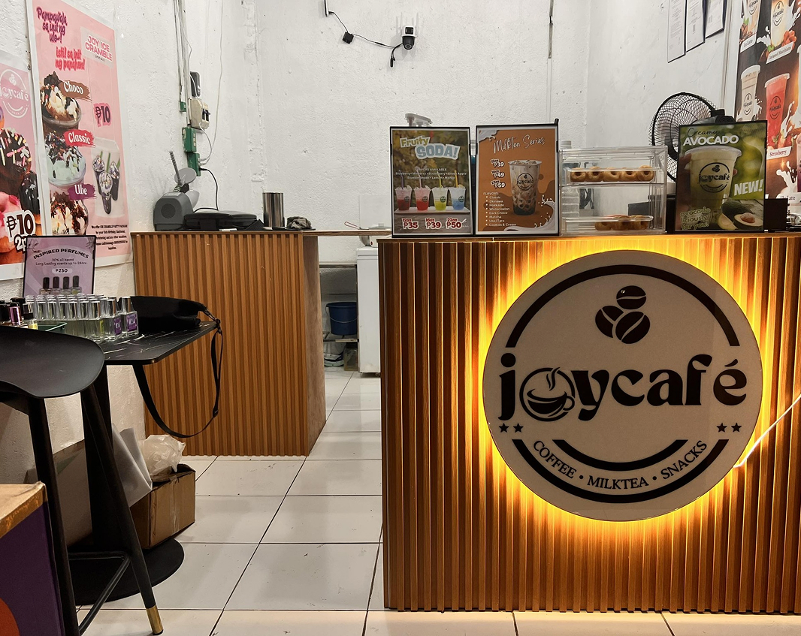

Welcome to Joycafe
At Joycafe, we serve more than just drinks—we serve moments. Located in the heart of Balamban, Cebu, we bring you refreshing milk teas, rich coffee, and delightful desserts made to satisfy your cravings. Whether you’re catching up with friends or enjoying your “me time,” Joycafe is your perfect chill spot.
